대전 복수동 목화아파트 양변기 재설치·천장 배수관 교체｜변기 수평 잡기부터 새 관 연결까지
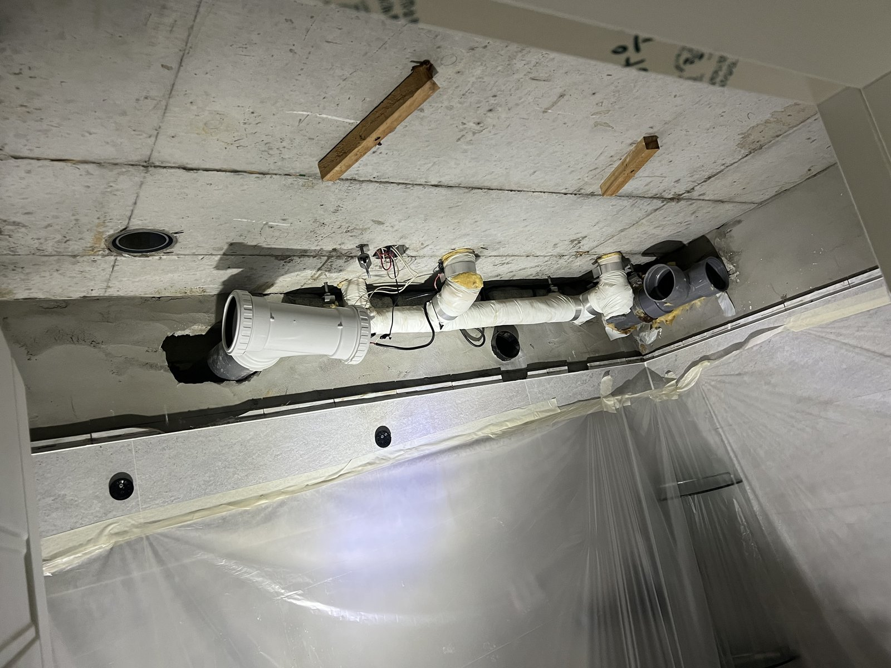
현장 작업 한눈에 보기
- 현장
- 대전 복수동 목화아파트 · 욕실 양변기·천장 배관
- 문제
- 양변기 밑동과 바닥 배수구 둘레
욕실 천장 속 회색 배수관 구간 - 작업
- 양변기 탈착·바닥 정리·수평 맞춰 재설치·밑동 마감
천장판 해체·기존 배수관 절단·새 배관 연결 - 결과
- 변기 재설치와 새 배관 연결 과정 사진 확인
통수 확인·천장 마감 사진은 미기재
대전 서구 복수동 목화아파트 세대의 이틀 작업 기록입니다. 10월 23일에는 양변기를 떼어 내 바닥을 정리한 뒤 다시 앉혀 수평과 밑동 마감을 맞췄고, 10월 26일에는 욕실 천장을 열어 기존 배수관을 잘라 내고 새 배관을 잇는 과정을 사진 12장으로 소개합니다.
1. 양변기를 떼어 낸 자리 정리
대전 서구 복수동 목화아파트 세대의 작업입니다. 10월 23일과 26일 이틀 동안 남긴 사진을 순서대로 소개합니다.
첫날은 욕실 양변기 작업입니다. 변기를 떼어 낸 뒤, 바닥 배수구 둘레에 남은 하얀 굳은 자국과 부스러기를 헤라로 긁어 냈습니다.
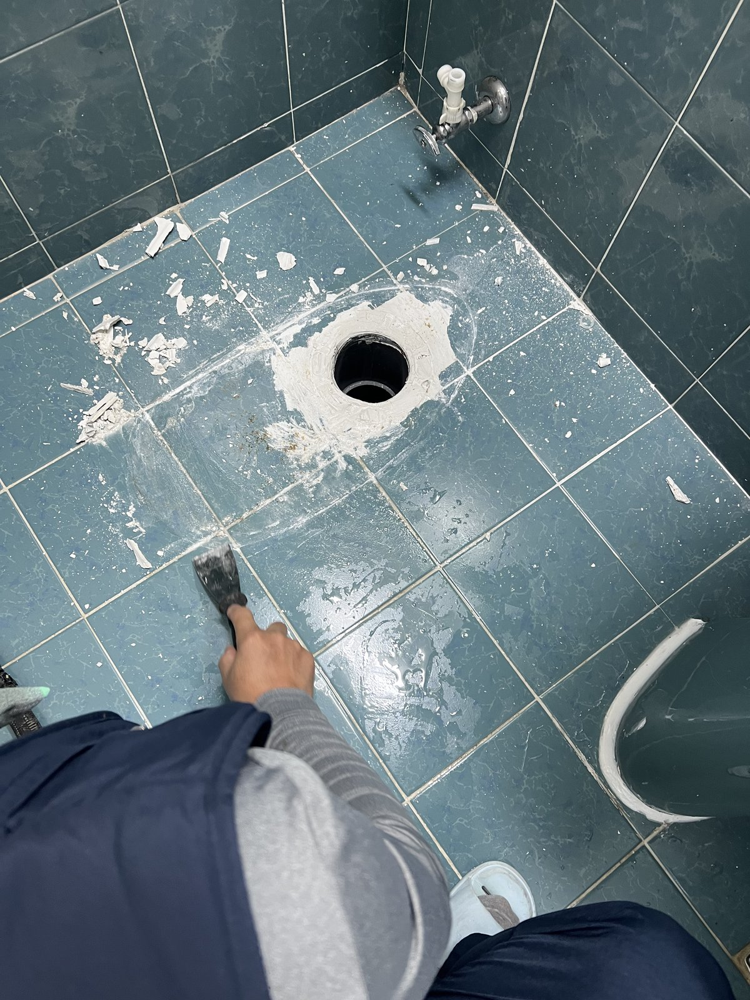
2. 변기를 제자리에 다시 앉히기
정리한 배수구 위에 변기 몸체를 다시 앉혔습니다. 물탱크를 올리기 전에 변기가 배수구 자리에 바르게 놓였는지 먼저 봅니다.
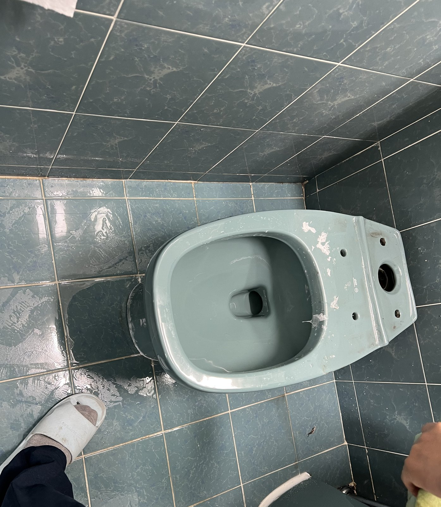
3. 수평자로 기울기 확인
물탱크를 결합한 뒤 변기 위에 수평자를 올려 기울기를 확인했습니다. 수평이 맞아야 밑동 둘레를 고르게 마감할 수 있습니다.
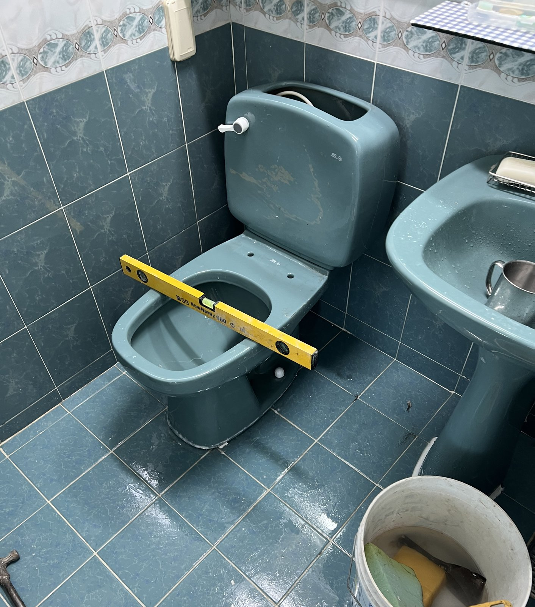
4. 비데를 달고 밑동 둘레 마감
비데를 다시 달고, 변기 밑동 둘레를 흰 시멘트 반죽으로 메워 바닥과의 틈을 마감했습니다.
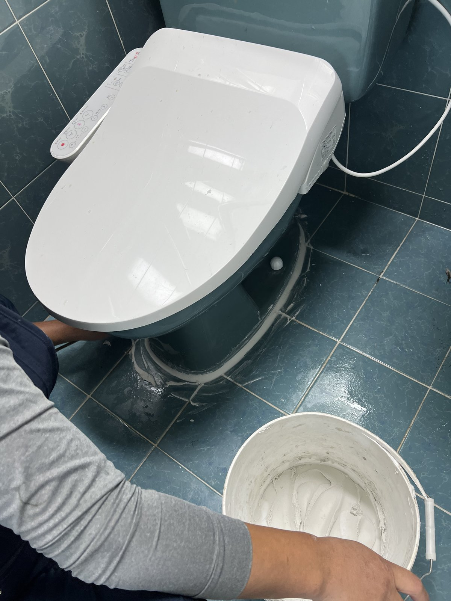
5. 첫날 마친 욕실
양변기와 비데를 다시 설치한 모습입니다. 밑동 둘레가 흰 마감으로 둘러져 있습니다.
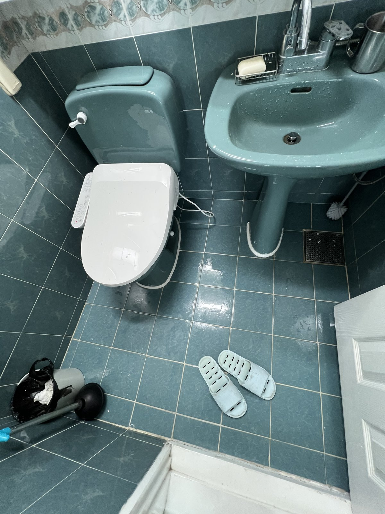
6. 천장 속 배수관 확인
같은 날 욕실 천장판을 열어 천장 속 회색 배수관을 확인했습니다. 천장 콘크리트에서 내려온 관이 꺾여 옆으로 이어지고, 이음 부속이 여러 개 끼워져 있습니다.
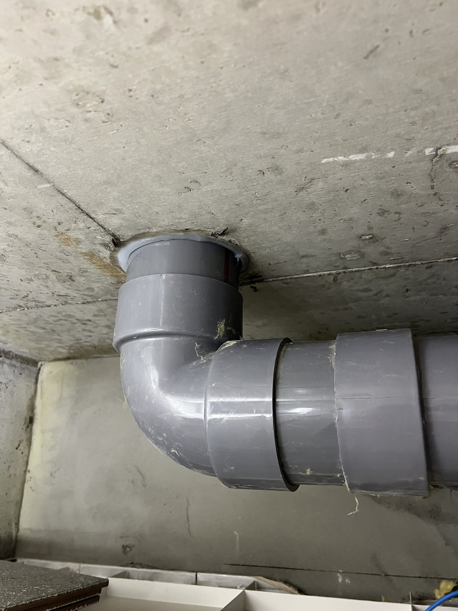
7. 둘째 날, 보양 후 천장판 열기
10월 26일에는 천장 속 배관 작업을 했습니다. 벽에 보양 비닐을 두르고, 천장판 가장자리를 칼로 따서 천장을 열었습니다.
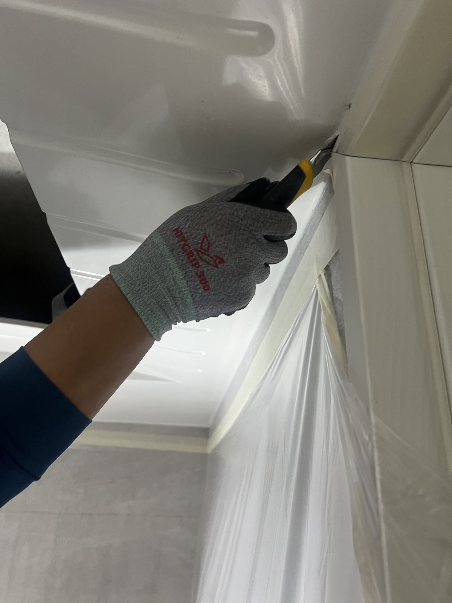
8. 드러난 기존 배관
천장판을 걷어 내자 회색 배수관과, 그 아래 흰 테이프로 감긴 배관들이 드러났습니다. 이번에 손본 것은 회색 배수관 구간입니다.
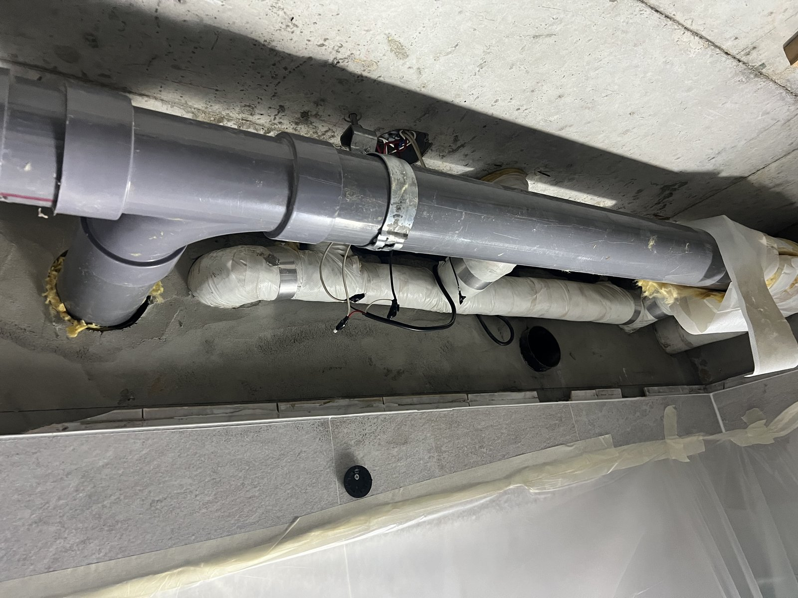
9. 잘라 낸 기존 관
기존 회색 배수관을 잘라 냈습니다. 잘라 낸 이음 부속의 단면과 관 안쪽이 보입니다.
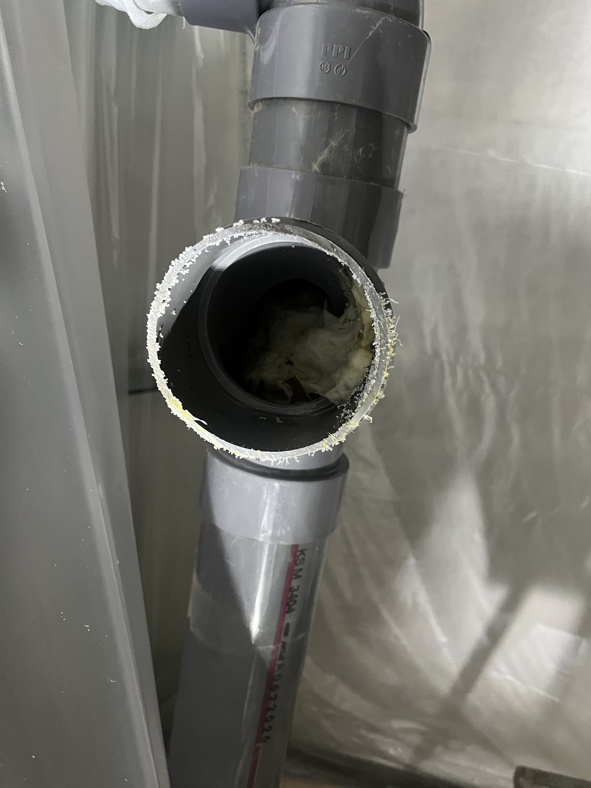
10. 위쪽으로 이어진 관 안쪽
관을 잘라 낸 자리에서 천장 위쪽으로 이어진 관 입구를 올려다본 모습입니다. 안쪽 벽에 하얀 알갱이가 붙어 있습니다.
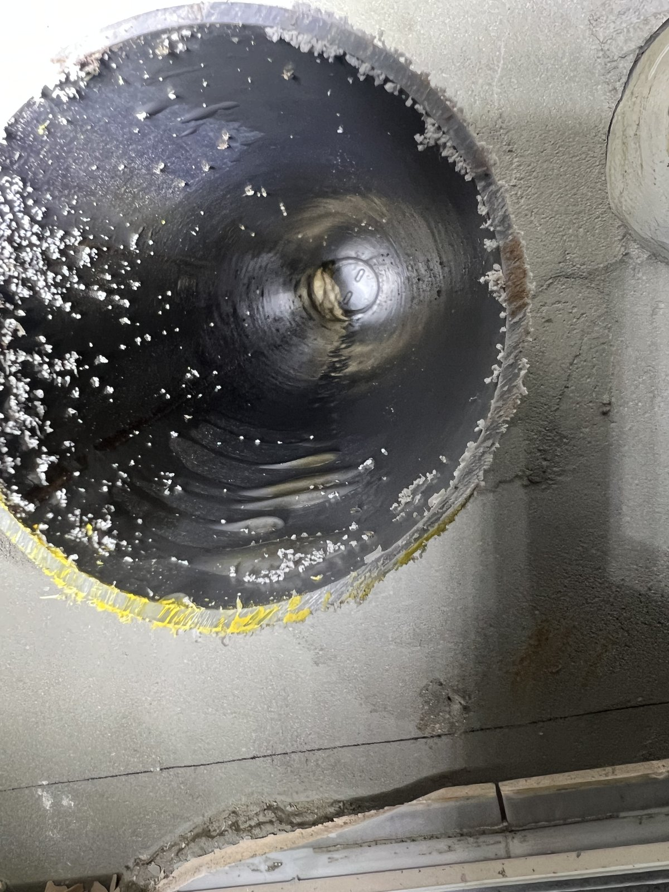
11. 새 관 재단
바닥에 골판지를 깔고, 새 흰색 관을 필요한 길이로 잘라 이음 부속과 맞췄습니다.
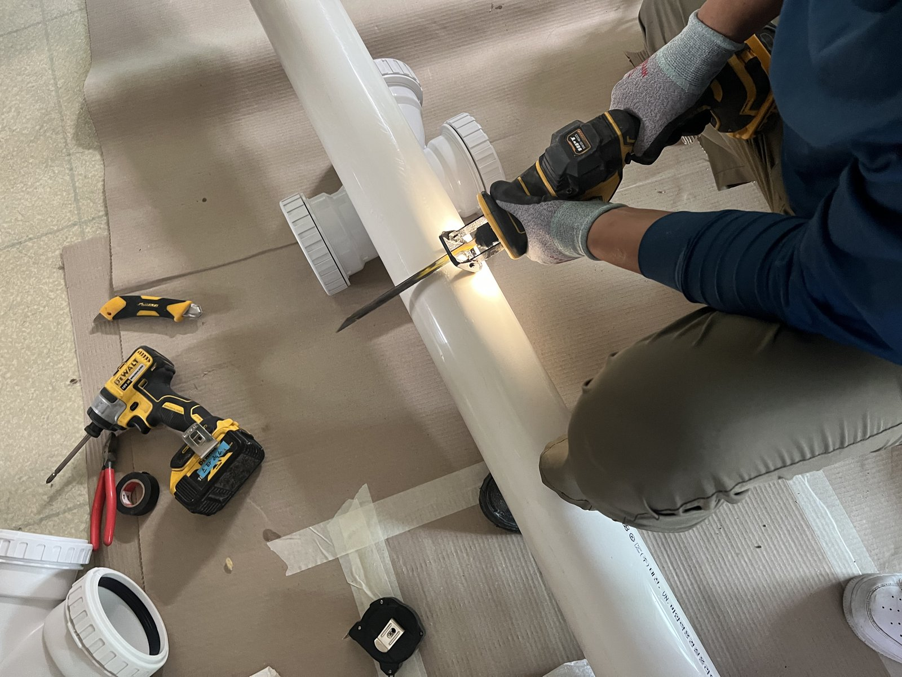
12. 천장 속 새 배관 연결
기존 회색 관을 걷어 낸 자리에 새 흰색 배관 부속을 잇고 있습니다. 흰 테이프로 감긴 다른 배관들은 그대로 둡니다. 이 사진은 연결 작업 중의 모습입니다.
13. 확인한 범위와 상담 안내
이번 기록은 양변기를 다시 설치하고, 천장 속 회색 배수관을 잘라 내 새 배관을 잇는 과정까지입니다. 배관을 바꾸게 된 원인, 물을 흘려 확인한 결과, 천장판을 다시 덮은 마감 사진은 자료가 없어 적지 않았습니다.
변기 밑동 둘레가 들뜨거나 욕실 천장에 물자국이 보인다면, 변기 전체와 밑동 둘레, 천장 자국 자리를 각각 찍어 상담해 주세요.